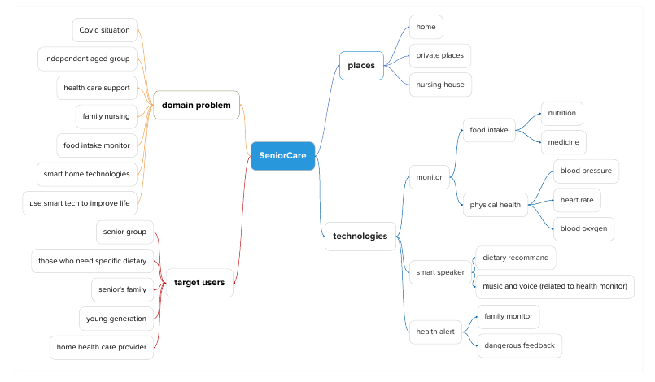
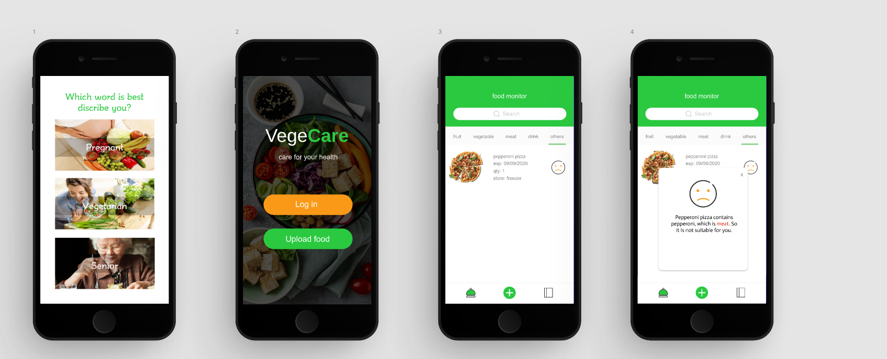
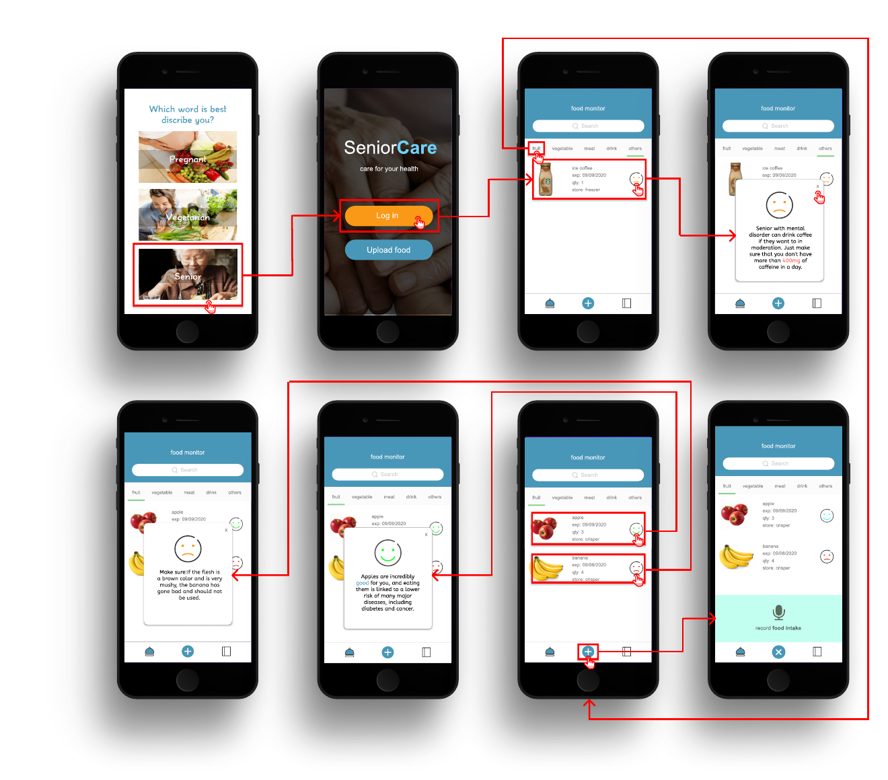
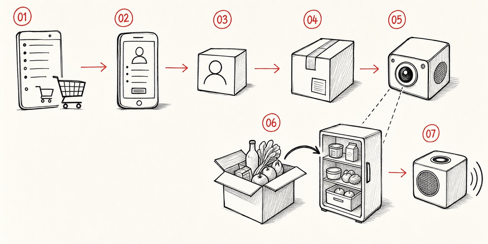
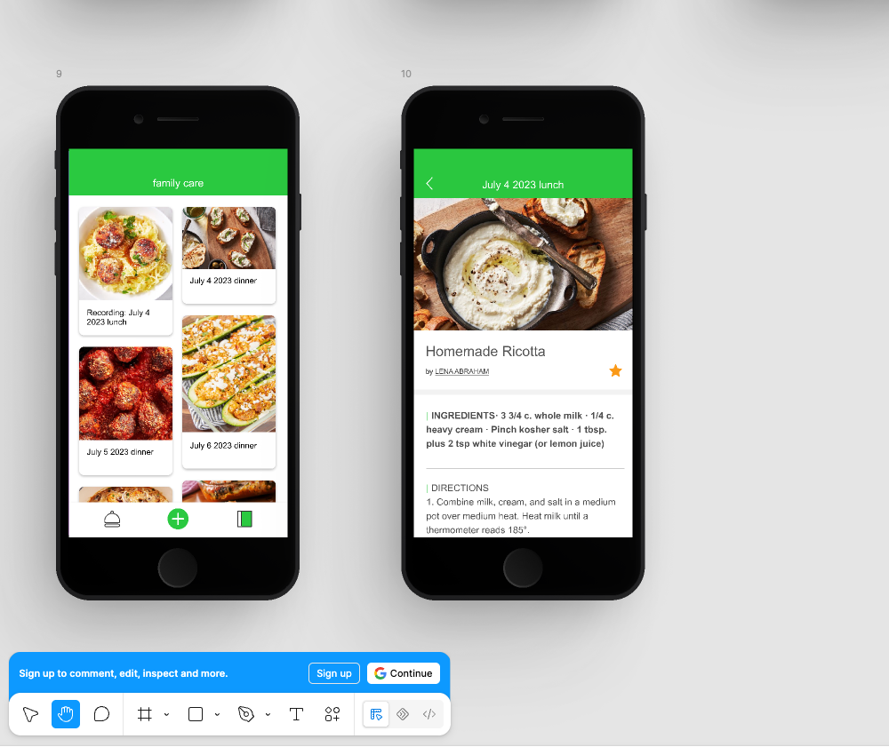

Care profiles
Pregnancy, vegetarian, and older-adult modes change the guidance rather than the detection.
Connected care / Edge vision / Behaviour design / 2020-2024
with its older-adult extension, SeniorCare
A smart-home care system that turns food recognition into profile-specific, reviewable guidance - then extends the same service into voice-supported care for older adults and their families.
01 / Problem
People managing pregnancy, vegetarian diets, or age-related health needs can spend considerable time checking whether food is appropriate. A wrong recommendation also carries more consequence than a typical shopping-app error.
FoodCare explored a different model: recognise food at the point of storage, connect it to a care profile, and explain the result through an interface the user can review. The research quickly showed that usefulness depended on accuracy, privacy, security, and visible user control.
Design questionHow might a smart home notice food for the user without quietly making health decisions for them?
Pregnancy, vegetarian, and older-adult modes change the guidance rather than the detection.
A physical recognition prototype and a mobile interface form one end-to-end service.
TAM, time-on-task, and SUS sessions tested understanding, usability, and willingness to adopt.
02 / Design process
The project moved through research synthesis, conceptual wireframes, flow assembly, visual refinement, and an interactive Figma prototype. The archive formally names the early Figma work as low-fidelity and the integrated hardware build as future high-fidelity work; the mid-fidelity stage below is therefore a transparent reconstruction from the surviving screen-flow artifact.
survey responses gathered across 10 days
interviews translated into requirements
FoodCare and SeniorCare product states reviewed
participants completed four prototype tasks

Survey and interview evidence connected food intake, ageing at home, family support, privacy, and trust. The team did not begin with “build a food scanner”; it began by mapping who needed help, where care happened, and what information had to remain visible.
The documented low-fidelity prototype tested the primary features and interaction order: select a care context, enter the food monitor, find an item, understand the result, and return without losing place.

This surviving flow sits between conceptual wires and the final clickable screens. Real food examples exposed the complete state model: positive and negative guidance, QR or photo upload, upload success, recipe menu and detail, and the route back home.

FoodCare uses green for active care states, orange for primary entry, mint for voice input, and modal cards for explanations. SeniorCare reuses the architecture in blue. The interactive page connects profile selection, login, inventory, food advice, modal returns, and voice intake with animated transitions.

Five participants completed four tasks. Finding and opening the food recommendation was slowest: 13 seconds on average, and 15 seconds for the two older participants. Both older adults needed physical instruction to discover the pop-up interaction.
Recommendations are kept separate from implemented changes so the case study does not imply a redesign was validated when it was not.
| Evidence / trigger | Design response | Status |
|---|---|---|
| Care advice felt opaque | Attach a readable reason to each food state | Implemented |
| Older adults requested fewer words and voice support | Senior blue variant + microphone intake panel | Prototyped |
| Recommendation task averaged 13 s; older users averaged 15 s | Make the full row clickable, add text status, and restore focus on close | Next / not retested |
| Cloud speech was unreliable under network constraints | Use preloaded audio through the MP3 module for the working proof of concept | Implemented fallback |
This is the verified eight-state senior interaction flow from the same FoodCare file. It preserves the original transitions and hotspots rather than recreating them as a video.
Choose Senior
Tap Log in
Open a food status or the + action
Close the dialog or voice panel to return
03 / System
The prototype separates sensing, recognition, care logic, and feedback. That separation matters: a detected object is only an input, not a health decision.

The paper prototype traces the service from an online shopping list and parcel delivery to camera-assisted food capture, storage, and voice feedback. It made the hand-offs between the user, app, sensing hardware, and care response visible before the interface and Raspberry Pi prototype were developed.
Concept evidence—not a usability-tested interaction.Link an online grocery list, choose a photo, or scan a shopping-list QR code.
USER CONTROL POINTA Raspberry Pi 4, camera, and two servos follow an item as it enters storage.
EDGE HARDWAREOpenCV handles the camera stream; a TensorFlow Lite model supports food detection.
COMPUTER VISIONThe selected profile is combined with item, quantity, expiry, storage, and dietary data.
PROFILE-SPECIFIC LOGICThe app shows a reason and recipe; an MP3 module can play a preloaded voice response.
REVIEWABLE FEEDBACKGoogle Cloud Speech was explored but not implemented reliably because of network constraints. Voice feedback in the working prototype used preloaded audio.
The project is a research prototype, not a clinical decision system. Dietary rules and recognition accuracy would require professional validation before deployment.
04 / Interaction flow
This map is rebuilt from all three pages in the original Figma file: Vege, senior interaction, and Senior. Solid connectors reproduce visible prototype links; dashed connectors identify useful continuations that the screens imply but the original prototype does not explicitly wire.
The inventory is the persistent hub. Each task either resolves back to it or moves into a deeper family-care view.
Tap Pregnant, Vegetarian, or Senior to establish which guidance is relevant.
Log in opens the monitor. Upload food starts a separate capture route.
Search or filter by category, then review item, expiry, quantity, storage, and status.
The same pattern handles a profile conflict, a spoilage warning, or a positive nutrition message. The explanation stays attached to the selected food.
Close × → return to inventoryTap the green plus to expose the microphone panel. The same control becomes a close button, keeping the exit visible during recording.
Close × → return to inventoryThe success state provides two exits: open the gallery to add another image, or close the overlay. The destination is shown, but the original file does not wire it.
Gallery / close → next state to define
The diary organises shared meals by date. Selecting a meal naturally continues to recipe detail, where ingredients and directions can be reviewed before acting.
Back ← return to family diaryUser: selects a profile. System: carries that context into later food guidance.
User: taps Log in. System: opens the searchable, category-based inventory.
User: selects a status. System: connects the item to a readable reason, not only a face or colour.
User: closes the message. System: preserves inventory context so another item can be checked.
User: taps the plus, speaks, then closes. System: reveals the microphone only for the active task.
User: uploads a food image. System: confirms success and exposes gallery or close actions.
User: opens a dated meal card. System: shows recipe context, ingredients, and directions.
Design intent: the eight-state Senior interaction page explores clearer feedback, voice support, and fewer competing actions.
05 / Paired project
Built on the FoodCare serviceSeniorCare keeps FoodCare's profile selection, login, food storage, and recommendation flow, then changes the interaction priorities: higher contrast, lower cognitive load, optional voice input, positive audio feedback, and a clearer role for family support.
Select Senior mode to load the older-adult care dataset.
Log in to reach the food-monitoring home.
Upload food data by voice note when typing or scanning is inconvenient.
Place the food in the crisper as part of the normal household routine.
Hear a positive acknowledgement after the camera recognises the category.
Monitor expiration through the food storage list.
Open a dietary recommendation before deciding what to eat.
The broader concept lets a family member upload care information, receive a remote update, and support food or medication routines. A smart speaker, pill organiser, and health sensors were proposed as next-stage components; they are concept directions, not all implemented features.
Five people - three younger adults and two older adults - completed the same four tasks.
The implication was direct: make the card tappable affordance more obvious, simplify the recommendation layer, strengthen close/back cues, and keep voice or gesture routes available for people who find screen interaction difficult.
06 / Evidence & technology
FoodCare's first evaluation found that people could follow the flow, but usefulness and intention remained conditional. SeniorCare made the relationship even clearer: when a task became harder to complete, ease of use, motivation, and trust fell together.
Mean high-fidelity usability score across six participants.
Small-sample prototype research: FoodCare n=6; results are directional, not population-level evidence.
Participants wanted evidence that recognition and dietary information were reliable before trusting a health-related recommendation.
Privacy concerns made visible login, permission, and upload choices part of the experience - not back-end policy alone.
SeniorCare showed that unclear touch targets and dense pop-ups can lower confidence even when the underlying system works.
Implementation map
Recognition accuracy, health datasets, privacy safeguards, and offline behaviour were not ready for clinical or consumer deployment. Google Cloud Speech was investigated but was not part of the reliable working flow. SeniorCare's pill organiser, health sensors, and family alerts were proposed directions for a later integrated prototype.
Player unavailable in this browser? Watch directly on YouTube ↗